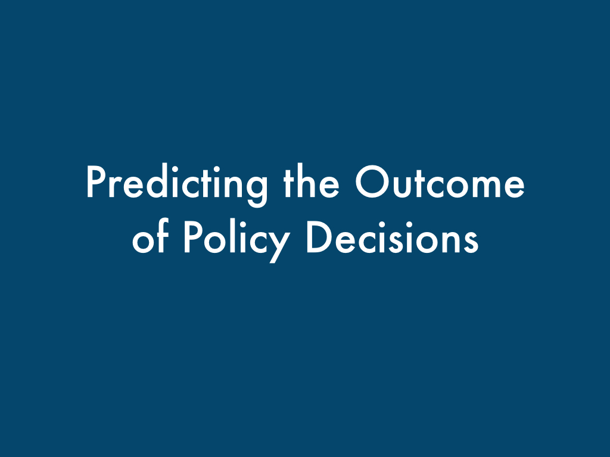

Modeling Ideology and Predicting Policy Change with Social Media: Case of Same-Sex Marriage
Authors
Amy X. Zhang, MIT CSAIL, Microsoft ResearchScott Counts, Microsoft Research
Abstract
Social media has emerged as a prominent platform where people can express their feelings about social and political issues of our time. We study the many voices discussing an issue within a constituency and how they reflect ideology and may signal the outcome of important policy decisions. Focusing on the issue of same-sex marriage legalization, we examine almost 2 million public Twitter posts related to same-sex marriage in the U.S. states over the course of 4 years starting from 2011. Among other findings, we find evidence of moral culture wars between ideologies and show that constituencies that express higher levels of emotion and have fewer actively engaged participants often precede legalization efforts that fail. From our measures, we build statistical models to predict the outcome of potential policy changes, with our best model achieving 87% accuracy. We also achieve accuracies of 70%, comparable to public opinion surveys, many months before a policy decision. We discuss how these analyses can augment traditional political science techniques as well as assist activists and policy analysts in understanding discussions on important issues at a population scale.
PDF version of paper
This paper was awarded an honorable mention at CHI 2015.
Video
Presentation
This talk was given at CHI 2015 in Seoul, Korea.
Throughout history, societies around the world have gone through tremendous shifts in public opinion and in policy.
In the U.S., the movement for women's suffrage in the early 1900's brought about important change that resulted in an
amendment to the U.S. constitution.
In the 50s and 60s the civil rights movement in the U.S. ushered out racial segregation and other Jim Crow laws.
Today we are living through yet another important movement in history, the gay rights movement.
Over the last several years, it's been a fascinating time to observe how this movement has gained ground,
shifting public opinion, and changing laws in state after state in America.
Wouldn't it be exciting to see how these movements unfold in real-time?
To be able to understand not just that public opinion has changed but how the conversations and ideology
around an issue have changed?
To be able to then use that information and predict big policy shifts before they even occur?
In order to solve these kinds of questions, we're going to need a lot more data than public
opinion polls provide. And we're also going to need more fine-grained and nuanced data.
So what can we do? Well, we can turn to analyzing social media data. In the last several years, social media has taken off, and now we can see people around the world discussing all sorts of issues at all hours of the day. Imagine if we had that kind of insight during the civil rights movement!
Luckily for us, the battle for same-sex marriage legalization has also been going on for the last several years in the U.S. offering us a perfect opportunity to see how public opinion and policy change interacted and unfolded.
So what can we do? Well, we can turn to analyzing social media data. In the last several years, social media has taken off, and now we can see people around the world discussing all sorts of issues at all hours of the day. Imagine if we had that kind of insight during the civil rights movement!
Luckily for us, the battle for same-sex marriage legalization has also been going on for the last several years in the U.S. offering us a perfect opportunity to see how public opinion and policy change interacted and unfolded.
From 2011 to 2014, over 50 pieces of legislation, court cases, and popular votes were contested in U.S. state
governments on the issue of same-sex marriage.
In state after state, constituents battled back and forth over whether
to allow same-sex marriage.
But why did some U.S. states enact policy change, reversing tens or hundreds of years worth of existing policy, while others chose not to?
Well in a representative democracy like the U.S., we could expect that politicians and policy-makers would do what their constituencies want them to do.
Well in a representative democracy like the U.S., we could expect that politicians and policy-makers would do what their constituencies want them to do.
And in many nation-wide and state-wide polls conducted over the last several years, we indeed see a pretty significant shift
in public opinion on same-sex marriage corresponding with the avalanche of bills and cases coming up for vote.
But looking past poling data, which can just give you a "yes I support same-sex marriage, no I don't" type of response,
using social media data, we can analyze, on a state-by-state level, a multi-facted characterization of a constituency's outlook
on an issue. We can attempt to model ideology.
We can also analyze specific points in time at a fine-grained level, including the time leading up to important policy decisions. And that means we can use the data to predict what will pass and what will fail.
We can also analyze specific points in time at a fine-grained level, including the time leading up to important policy decisions. And that means we can use the data to predict what will pass and what will fail.
So now let's get into how we did this. First I'll talk about the datasets that we collected.
We gathered our social media data from Twitter, specifically the Twitter Firehose, a dataset of all public posts made on Twitter.
We used a set of 73 keywords and phrases such as "same-sex marriage", "traditional marriage", and others to determine what tweets were
related to same-sex marriage and gay rights. The tweets were captured from 2011 to July 2014 - 3 and a half years when quite a lot of states
considered same-sex marriage legislation. And we also geographically tagged the tweets to a specific state using the user's profile location field,
discarding the ones where we were unable to determine the location. The details of how we did this are in the paper.
Altogether, we collected 1.8 million tweets.
We also collected a policy dataset, which is a manually gathered dataset of 69 policy events that occurred between
January 2011 and July 2014. These are bills that have come up for a state legislative vote, court cases that have come
to a judicial vote, or popular votes. We collected both the outcome of the event and the date of the final decision
that led to the outcome.

Now I'll go into the measures that we captured at the state population level from our Twitter dataset.
For most of our measures, we used techniques such as LIWC (Linguistic Inquiry and Word Count), which are dictionaries created by domain experts
and linguists that match certain categories.
To capture ideology, we collected both morality and personality measures. We used political psychology research that demonstrates that the personality that people have and the underlying moral ideals that people hold dear say a lot about their political orientation and stance on a whole host of issues. So for instance, am I the kind of person who cares more about maintaining fairness? Or about respecting authority?
To capture ideology, we collected both morality and personality measures. We used political psychology research that demonstrates that the personality that people have and the underlying moral ideals that people hold dear say a lot about their political orientation and stance on a whole host of issues. So for instance, am I the kind of person who cares more about maintaining fairness? Or about respecting authority?
For example the following are two tweets, one containing terminology related to fairness, while the 2nd frames the issue of same-sex marriage around authority.
To help further characterize the discussions within constituencies, we also collect the measure emotionality, including basic positive and negative sentiment,
as well as anxiety, anger, and swear words. We also collect levels of certainty, so the use of certain versus tentative language. And we collect activity level,
which looks more at volume and number of users tweeting instead of language use.
So what happens when we apply these measures to different state constituencies?
First as one example of validation of our methods, you can see how our religion measure correlates when matched up against more
traditional methods - in this case Gallup polling that asks people how religious they are.
You can see that both methods have darker areas in the Bible belt, or southern states in the U.S., while the north and coasts are less religious.
You can also see a bit more variance in the less populated regions, highlighting how in many places Twitter is just not used that often, leading to some discrepancies in data.
You can see that both methods have darker areas in the Bible belt, or southern states in the U.S., while the north and coasts are less religious.
You can also see a bit more variance in the less populated regions, highlighting how in many places Twitter is just not used that often, leading to some discrepancies in data.
We can also characterize how states fall along the spectrum of liberal versus conservative on the issue of same-sex marriage.
Here we compared how far away states were from each other when comparing their ideological measures. The darker the color, the more
two states match. Once we clustered the distances, we can see how conservative states cluster on one end. All the states that considered
legalizing same-sex marriage in the conservative cluster had bills that failed or are pending.
More liberal states clustered on the other side. 12/14 states in the liberal cluster have legalized same-sex marriage as of July 2014. And in the middle we have what we call "battleground" states, where it's not immediately certain what side they're on. This group accounts from 71% of the policy events that happened in our time span.
The issue I mentioned previously about more rural states comes up again here - you can see that Wyoming is a clear outlier from everyone else due in part to its small and mostly rural population. So that's one of the limitations of our method.
More liberal states clustered on the other side. 12/14 states in the liberal cluster have legalized same-sex marriage as of July 2014. And in the middle we have what we call "battleground" states, where it's not immediately certain what side they're on. This group accounts from 71% of the policy events that happened in our time span.
The issue I mentioned previously about more rural states comes up again here - you can see that Wyoming is a clear outlier from everyone else due in part to its small and mostly rural population. So that's one of the limitations of our method.
Taking that analysis a step further, we can analyze how states move over time with respect to the different clusters of liberal, conservative, and battleground.
In this analysis, we looked at clusters generated from data in 2011 and clusters from the year 2013. We visualize the states that moved clusters from one year
to the other. Since the original clusters are in high dimension, we used Principle Component Analysis to get that down to two dimensions - but that means that you should
focus on the relative distances between points as opposed to what the axes represent.
We can see Texas and North Carolina moved more to the conservatie side during this time period. In fact North Carolina was the only state to approve legislation banning same-sex marriage during this time. And all three states moving to the liberal side have legalized gay marriage during or before this time period.
We can see Texas and North Carolina moved more to the conservatie side during this time period. In fact North Carolina was the only state to approve legislation banning same-sex marriage during this time. And all three states moving to the liberal side have legalized gay marriage during or before this time period.
So now let's focus on how state constituencies change in the time period directly leading up to policy decisions.
When we wook at the week directly preceding the policy decision, and we separate the events that eventually passed versus the ones that
eventually failed, we can see some big differences between some of the measures. The percentages here are with respect to the national
average during that week.
For instance, we see that the openness personality and fairness moral value are much higher for policies that pass versus policies that fail, and the moral concern for harm is higher for policies that fail.
For instance, we see that the openness personality and fairness moral value are much higher for policies that pass versus policies that fail, and the moral concern for harm is higher for policies that fail.

We also see overall higher levels of engagement for policies that pass. For policies that fail, we see much higher levels of tentativeness.
And for the measure of emotion, we see higher levels of anxiety before policies that fail.
We can also look further back for a policy change event. Here we look at the six months prior to a policy decision, plotting the
value of the measure over time, again comparing passing versus failing policies within a single graph. Here are a few for comparison.
So here you can see how some measures are greater than others over the entire course of the time, for instance with religiousness and purity
representing more conservative values and openness and fairness representing more liberal values.
But it was also interesting to see how these measures are changing over time. For instance, notice how with tentativeness, policies that pass have decreasing tentativeness over time while policies that fail have increasing tentativeness. And likewise, the moral value of ingroup also crosses during the 6 months leading up to the final decision.
But it was also interesting to see how these measures are changing over time. For instance, notice how with tentativeness, policies that pass have decreasing tentativeness over time while policies that fail have increasing tentativeness. And likewise, the moral value of ingroup also crosses during the 6 months leading up to the final decision.

So we collectd a lot of measures about Twitter leading up to policy decisions. Now how can we use those measures to predict the outcome?
Drawing off of our previous exploration of the measures over time, we chose to collect two different features for each of the measures
we talked about earlier. We calculate the average value of each measure over the one week prior to the decision. And we also calculate
the average daily change or the average slope over the prior two months leading up to the decision. The time windows were determined
experimentally.
We tried classification using the following machine learning methods. We used 4-folds cross validation
to train and test our data.
We used as our baseline a prediction using data collected from surveys. We gathered 204 state-wide
polls that asked "Do you support gay marriage, yes or no" over our time period from reputable sources.
And then we used the outcome of the most recent of those polls before a policy decision to then predict
the outcome of that decision. We tried some other ways, such as averaging over some time window prior but this
turned out to be the most predictive.
And now for our initial results.
Our best classifier used adaptive boosting decision trees and overall had an accuracy of around 80%. In comparison
survey data provided only an accuracy of 70%. So our method had a 10% improvement over the baseline.
We can also get an idea of the different features that ended up being useful for classification purposes. On the left we have
the slope measure over 2 months before and on the right we have the average alue in the 1 week before. And you can see that
the most important features are pretty different for the two types of features.
We can also get an idea of how our different measure categories did overall. Here we look at the r^2 metric,
which is a measure of goodness-of-fit using a logistic regression. For comparison purposes, I split up
Emotionality into Sentiment and Emotion, with emotion containing just anger, anxiety, and swear words.
We can see that overall Sentiment by itself was really not a good indicator for passing or failing legislation, while
the Moral Values that we extracted were really helpful for our task. So if we had just done sentiment analysis,
we probably wouldn't have done a great job.
But can we do better? Well right now, we're just using the measures within a state to predict the outcome for that state.
For instance, if a bill is coming up in Texas, we're looking at what people are saying on Twitter within Texas leading up to the vote.
But a lot of the news and discussion surrounding gay marriage during this time spilled over into other states. For instance, I definitely heard about Prop 8 in California and the bill in New York even though I was in Massachusetts at the time.
But then if we do include other states, how should we weigh their measures? There's political science research that demonstrates that states are influenced by other states with similar ideologies. So if I'm in Massachusetts, I might be interested in what's going on in California. There's additional political science research that shows that states are influenced by neighboring states. So Texas might be interested in what's going on in New Mexico.
When we tested both ways of weighing other states, we found that weighing by geography actually performed the best.
But a lot of the news and discussion surrounding gay marriage during this time spilled over into other states. For instance, I definitely heard about Prop 8 in California and the bill in New York even though I was in Massachusetts at the time.
But then if we do include other states, how should we weigh their measures? There's political science research that demonstrates that states are influenced by other states with similar ideologies. So if I'm in Massachusetts, I might be interested in what's going on in California. There's additional political science research that shows that states are influenced by neighboring states. So Texas might be interested in what's going on in New Mexico.
When we tested both ways of weighing other states, we found that weighing by geography actually performed the best.
So including other states and weighing by geography gives us a final accuracy of 87%, which is now
a 17% improvement over the baseline of survey data.
We can also look at how our prediction does over time. So if I predict what will happen in an upcoming bill vote taking place
several months from now, how will I do?
So here we made a prediction every single day over the course of a year before each policy decision and we show the average prediction accuracy
over time. So it turns out that we can get a pretty decent prediction, around 70%, even going back several months in advance of the policy decision.
So now for some future work in this area along with some interesting applications. First it would be interesting to see how our analysis
generalizes to other issues such as marijuana legalization. The measures we used, particularly the ideological measures, might themselves
be useful for things like recommending content or promoting empathy. And finally, the entire pipeline I just outlined for you all, you could imagine
that used in a real-time dashboard that would be extremely useful for policy analysts, activists, and political organizations.
Email me with questions or comments - axz@mit.edu